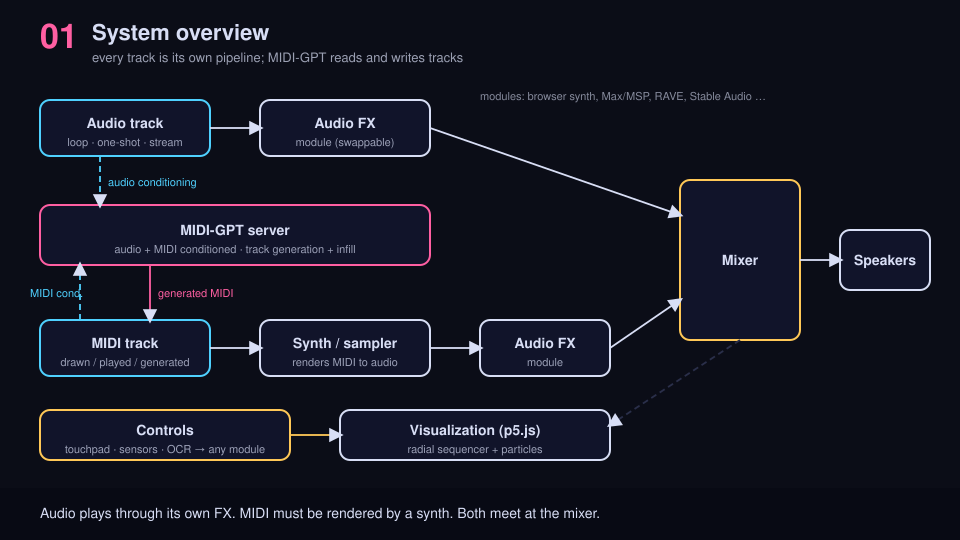
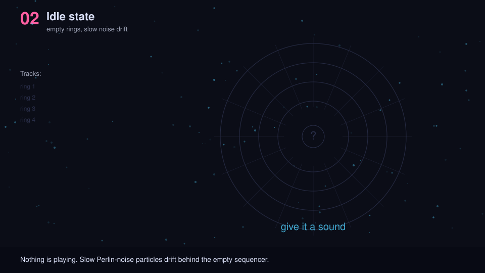
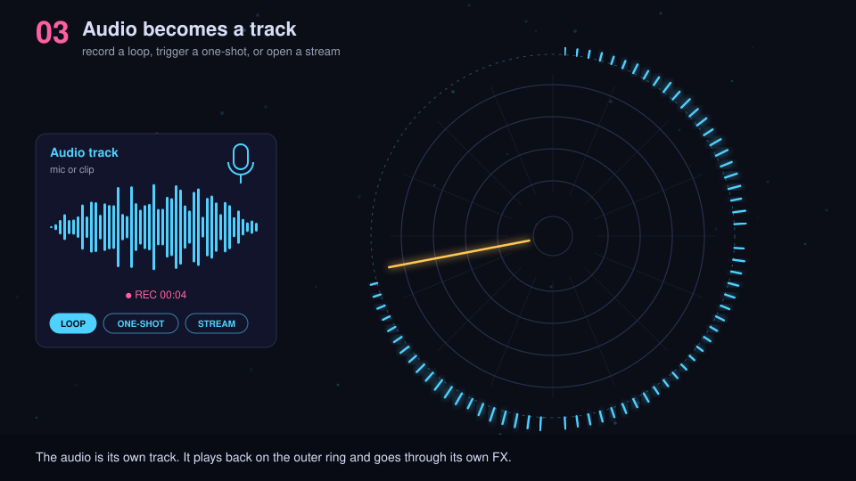
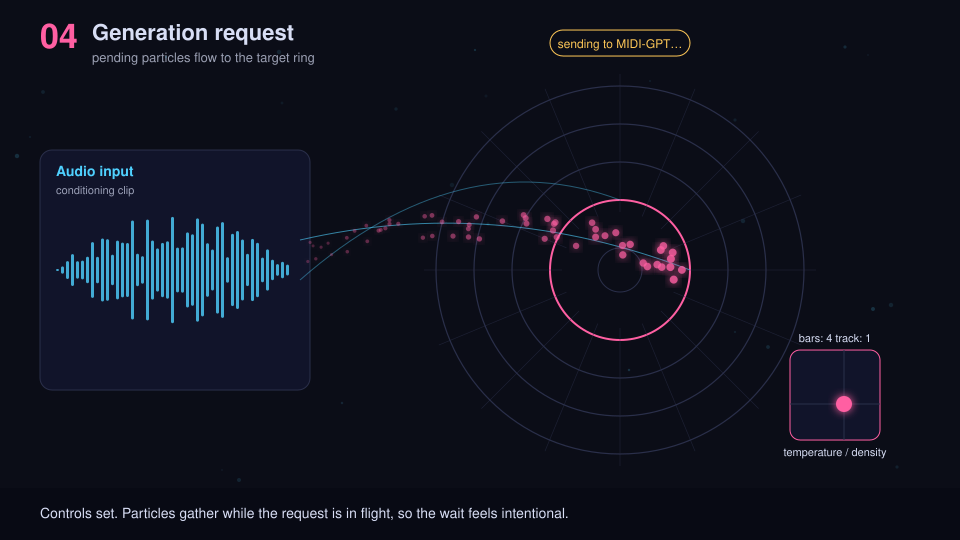
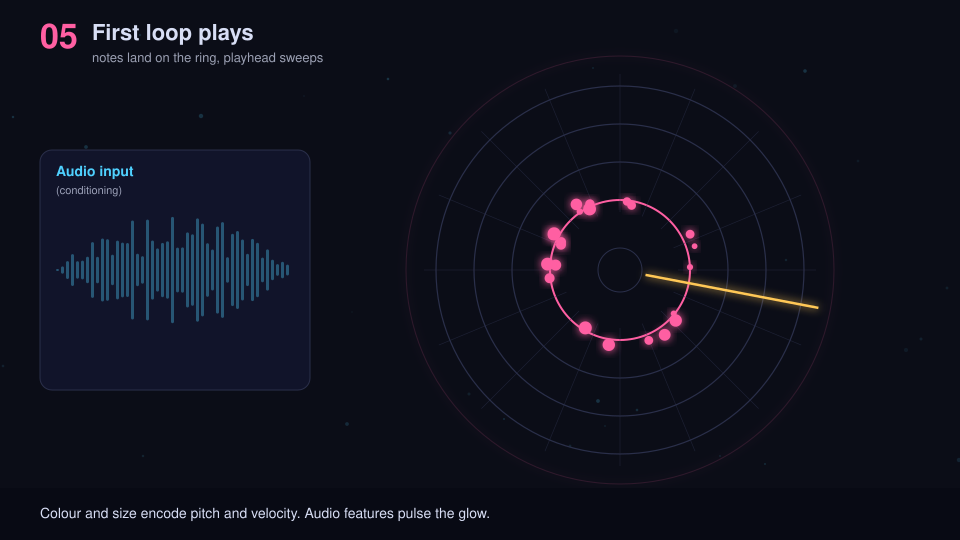
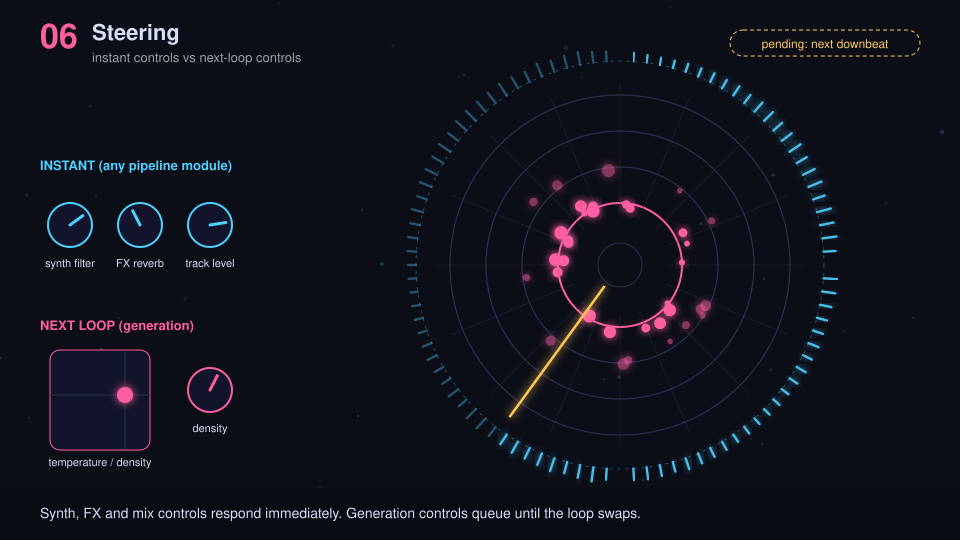
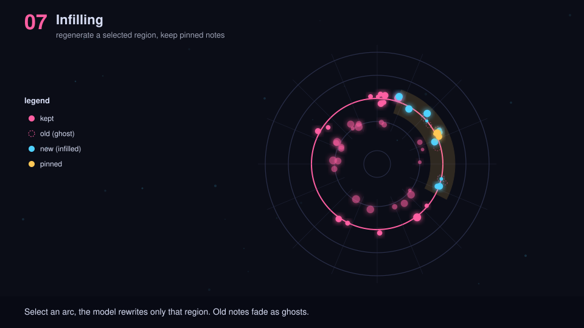
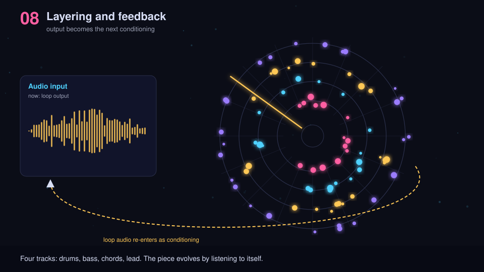
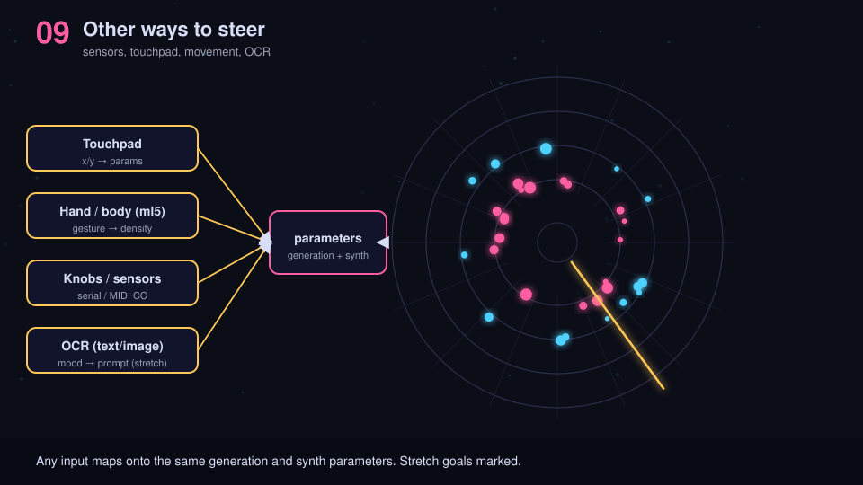
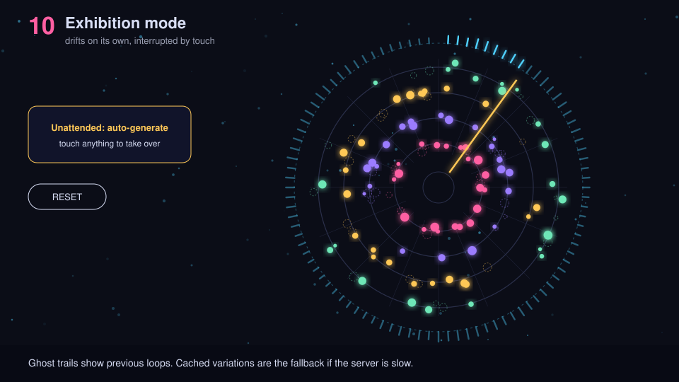

An instrument where audio is both a track and a prompt. A visitor feeds
in sound, which plays in the mix and conditions MIDI-GPT. The model
writes MIDI loops, and a radial sequencer with particle effects shows
what it heard and what it wrote.
Tracks and pipelines
Audio track: a loop, a one-shot, or a continuous stream. It plays through its own FX and the mix.
MIDI track: drawn, played, or generated. A synth or sampler module renders it to sound, and it can also condition MIDI-GPT.
MIDI-GPT: reads audio and MIDI conditioning from tracks and writes MIDI (track generation and infilling).
Modules are swappable: browser synth, Max/MSP, RAVE, Stable Audio.
Scope
Core (midpoint demo): frames 2–5. An audio track playing, MIDI-GPT generating a MIDI track from it, both in the mix, one control, basic particles.
Final: frames 6–8 and 10. Instant vs. next-loop controls, infilling, layering and feedback, exhibition mode.
Stretch: frame 9 extra inputs (sensors, OCR) and other audio sources such as Max/MSP, RAVE and Stable Audio.
Frames

1. System overview. Every track is its own pipeline. Audio track → FX → mixer. MIDI track → synth → FX → mixer. MIDI-GPT reads conditioning from tracks and writes MIDI tracks.

2. Idle state. Empty radial sequencer with slow drifting particles. The outer dashed ring is the audio lane and the inner rings are MIDI tracks.

3. Audio becomes a track. The visitor records a loop, triggers a one-shot, or opens a stream. The audio plays back on the outer waveform ring through its own FX.

4. Generation request. Audio (and optionally MIDI) tracks condition MIDI-GPT. Pending particles run from the audio ring to the target MIDI ring while the audio keeps playing.

5. First loop plays. Generated notes land on the MIDI ring and are rendered by a synth. The audio track plays untouched alongside.

6. Steering. Synth, FX and mix controls respond instantly. Generation controls queue until the next loop swap.

7. Infilling. Select an arc of a ring and only that region is regenerated. Old notes fade as ghosts, pinned notes stay.

8. Layering and bounce. Add drums, bass, chords and lead. Any track can be bounced to audio and reused as a new audio track or as conditioning.

9. Other ways to steer. Touchpad, hand tracking, knobs and sensors, and OCR all map onto generation, synth, FX or mix parameters.

10. Exhibition mode. Unattended auto-generation with ghost trails. Touch anything to take over, with a reset and cached fallbacks.
AI use
The storyboard frames were drawn with AI assistance. The idea and direction are mine.